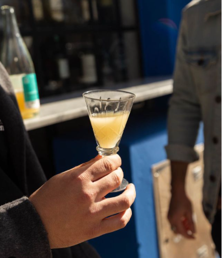

tintos
Grenache.
Pinot Noir.
Syrah.
Malbec.
Cabernet Sauvignon.
blancos
Chardonnay.
Pinot Blanc.
Semillion.
Sauvignion Blanc.
Gewürztraminer.
rosados
Un rosado es, básicamente, un vino tinto con poca maceración. Proviene de uvas negras (o mezcla de uvas negras y blancas) y la tonalidad del rosado dependerá del tiempo de maceración: a menor tiempo, color más tenue y blanquecino; y a mayor tiempo de maceración, color más púrpura o violáceo
naranjos
un vino naranjo es un blanco que se elabora como un vino tinto: se maceran las pieles durante la fermentación y un tiempo posterior,
